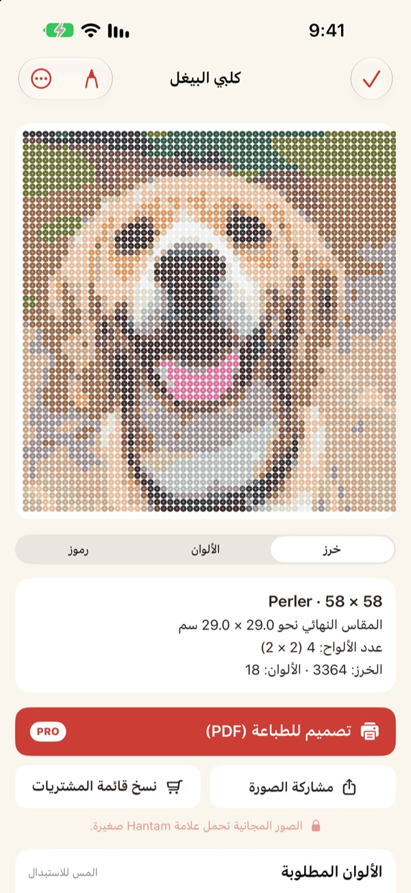
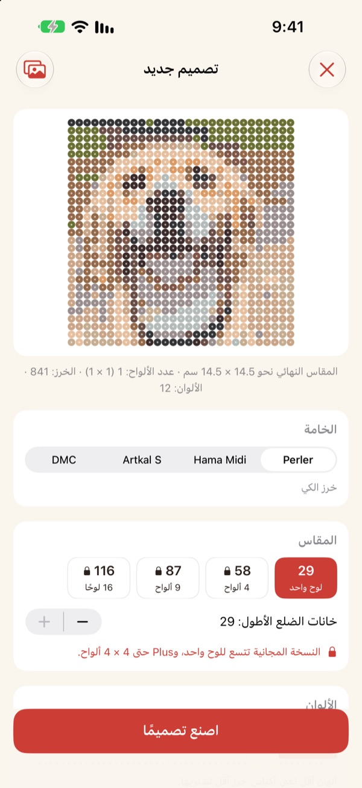
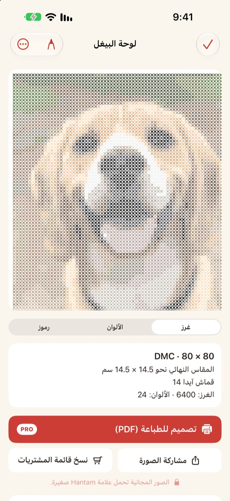
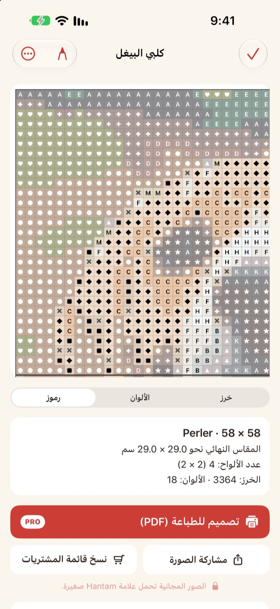
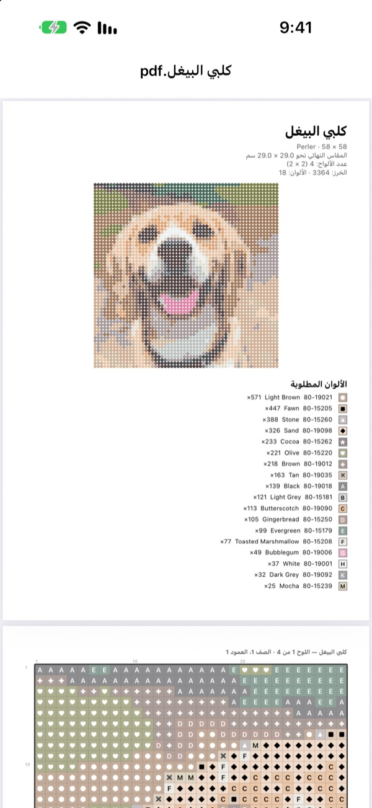

صورة واحدة
تصبح تصميمًا
اختر صورة لحيوانك الأليف أو لوجهك أو لشخصيتك المفضلة، وسيصنع منها Hantam تصميم خرز كي أو تطريز بألوان تستطيع شراءها فعلًا.
التصاميم بحجم لوح واحد مجانية. صورك لا تغادر جهاز iPhone.

جرّبه بنفسك على صورة
بالطريقة نفسها التي يعمل بها التطبيق، تُختار الألوان من جدول ألوان Perler الحقيقي. غيّر المقاس وعدد الألوان، أو جرّب صورتك.
صنع التصميم سهل، لكن مطابقته لألوان الخرز الحقيقية صعبة
إن حوّلت صورة إلى بكسل بأي تطبيق تحرير، ستظهر ألوان لا وجود لها في المتاجر. ستخمّن لكل خانة من أي علبة خرز تأخذ، وتعدّ بنفسك كم حبة تشتري من كل لون. أما Hantam فيختار من الألوان المتوفرة فعلًا، ويخبرك بدقة كم تحتاج منها.
ألوان متوفرة فعلًا، وأرقامها الحقيقية
اختر بين خرز Perler وHama Midi وArtkal S أو خيوط DMC. كل خانة تُطابَق بلون تبيعه تلك العلامة فعلًا ويُكتب رقمه عليها.
حدّد المقاس وعدد الألوان أيضًا. والتصاميم الكبيرة تُقسَّم على ألواح 29 × 29.

وتصاميم التطريز أيضًا
اختر خيوط DMC لتصبح الصورة نفسها تصميم تطريز كروس ستيتش. اختر قماش آيدا 11 أو 14 أو 16 أو 18 لترى المقاس النهائي وعدد الغرز لكل لون.

ما تحتاج شراءه أمامك
انتقل إلى مخطط الرموز وتابع الخانات واحدة واحدة، مع خطوط عريضة عند حدود الألواح أو كل 10 خانات. شاهد كم حبة تحتاج من كل لون، وانقلها كلها دفعة واحدة بزر نسخ قائمة المشتريات.
ويمكنك لمس خانة لتغييرها، أو استبدال لون بلون آخر في التصميم كله.

اطبع وابدأ فورًا
مع Pro تصدّر تصميم للطباعة (PDF): في الصفحة الأولى قائمة الألوان، ثم مخطط رموز لكل لوح في صفحة مستقلة.

ثلاث خطوات إلى تصميمك
- 1
اختر صورة
الحيوانات الأليفة والوجوه والشعارات والشخصيات كلها مناسبة. الصور ذات العنصر الواضح تعطي أفضل نتيجة.
- 2
اختر الخرز أو الخيوط
حدّد العلامة التجارية والمقاس وعدد الألوان.
- 3
ابدأ الصنع
اصنعه وأنت تنظر إلى التصميم على الشاشة، أو اطبعه مع Pro.
الخامات والمقاسات
- Perler · Hama Midi · Artkal S
- خرز الكي، ألواح 29 × 29، الحبة نحو 5 مم
- DMC
- خيوط تطريز، قماش آيدا 11 و14 و16 و18
- مجاني
- لوح خرز واحد (29 خانة)، والخيوط حتى 40 خانة للضلع الأطول
- Plus · Pro
- ألواح خرز 4 × 4 (116 خانة)، والخيوط حتى 200 خانة
- عدد الألوان
- من لونين إلى 50 لونًا في التصميم الواحد
Perler وHama وArtkal وDMC علامات تجارية لأصحابها، وHantam غير مرتبط بها. قد تختلف الألوان على الشاشة قليلًا عن الواقع.
ابدأ مجانًا، وPlus للتصاميم الكبيرة، وPro للطباعة
مجاني
- تصاميم حتى لوح واحد (40 غرزة للتطريز)
- كل العلامات: Perler وHama وArtkal وDMC
- عدد كل لون، وقائمة المشتريات، واستبدال الألوان
- حفظ حتى 3 تصاميم
- مشاركة صور بعلامة Hantam صغيرة
Hantam Plus · Pro
- Plus · حتى 4 × 4 ألواح (200 غرزة للتطريز)
- Plus · حفظ التصاميم بلا حدود
- Plus · صور بلا علامة
- Plus · كل أدوات فن البكسل
- Pro · تصاميم PDF للطباعة
- Pro · فيديوهات قبل وبعد دون تعليق Hantam · 3 حزم فلاتر
اشتراك أسبوعي أو شهري أو سنوي، أو وصول مدى الحياة بدفعة واحدة
ويمكنك أيضًا إهداء Pro لصديق من داخل التطبيق.
الأسئلة الشائعة
هل تُرفع صوري إلى أي مكان؟
لا. تُعالَج صورك وتصاميمك وتُحفظ داخل جهاز iPhone فقط.
الألوان على الشاشة تختلف قليلًا عن الخرز الحقيقي.
تظهر الألوان على الشاشة بشكل مختلف عن البلاستيك والخيوط. المس لونًا في قائمة الألوان لتستبدله بلون أقرب من العلامة نفسها.
ما أكبر حجم للتصميم؟
النسخة المجانية حتى لوح واحد 29 × 29، والتطريز حتى 40 خانة للضلع الأطول. ومع Plus حتى 4 × 4 ألواح (116 خانة) أو 200 غرزة للتطريز.
ما الصور التي تعطي أفضل نتيجة؟
صورة فيها عنصر واحد وخلفية بسيطة. كلما قلّ عدد الألوان صار التصميم أنظف، فإن بدت النتيجة مزدحمة فقلّل عدد الألوان.
هل ما زال بإمكاني صنع فن البكسل؟
نعم. تحويل الصور إلى بكسل، والرسم بالتتبع مع 110 أمثلة، والرسوم المتحركة إطارًا بإطار، كلها موجودة. وأدوات فن البكسل كلها ضمن Plus.
كيف أستعيد مشترياتي؟
افتح الإعدادات في التطبيق والمس استعادة المشتريات. استخدم حساب Apple نفسه الذي اشتريت به.
كيف ألغي الاشتراك؟
افتح إعدادات iPhone › اسمك › الاشتراكات واختر Hantam ثم ألغِه. الوصول مدى الحياة دفعة واحدة ولا يتجدد.
أين أرسل بلاغات الأخطاء واقتراحات الميزات؟
أسرع طريقة هي الإعدادات › إرسال رأيك داخل التطبيق. ويمكنك أيضًا مراسلتنا على البريد أدناه أو برسالة على إنستغرام (@lee25_ios).
أرسل أسئلتك وبلاغات الأخطاء واقتراحاتك إلى leeo@kakao.com.